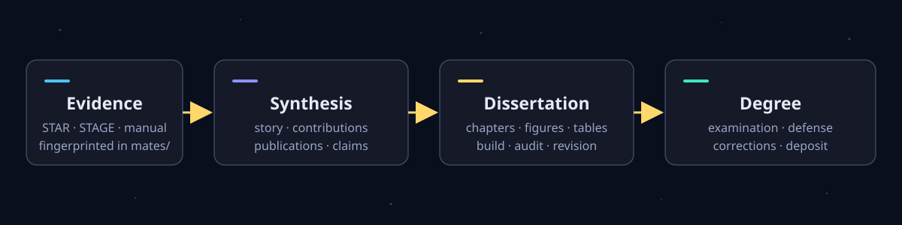

01 · 研究
STAR
Systematic Toolchain for AI Research
推进一个研究项目：从想法出发，经可复现实验，产出可直接用于论文的证据。
A STAR takes the STAGE to tell a STORY
作为 STAR 与 STAGE 配套的硕士/博士学位论文工具——STORY 把研究生阶段的研究、相关的发表论文和带指纹的证据组织成一部经得起答辩、可直接归档的学位论文： 每个数字都能追溯到证据文件，或显式标记为缺失；复用已发表内容时保留署名与归属说明； 委员会意见和学位要求都记录在案。
STAR 项目家族
三者都可以独立使用；连起来时，上游产物以带指纹的只读证据流向下游。
Systematic Toolchain for AI Research
推进一个研究项目：从想法出发，经可复现实验，产出可直接用于论文的证据。
Systematic Toolchain for Authoring, Guiding, and Editing
把一项研究贡献写成可追溯的论文，贯穿评审、回复与投稿打包。
Systematic Toolchain for Organizing Research over Years
把研究生阶段的研究组织成经得起答辩、可直接归档的硕士或博士学位论文。
为什么选择 STORY
当证据散落在旧仓库、数字留在聊天记录、归属只存在于某人脑中时，学位论文就会腐烂。 STORY 把整条保管链——证据、论断、发表记录、里程碑——搬进仓库本身。
前置部分、章节、附录、图、表和参考文献在 manus/ 下各归其位——模板开箱即可编译，支持英文与简体中文。
STAR 研究成果、STAGE 论文材料或人工登记的文件，都以逐文件指纹快照存入 mates/。证据单向流动——绝不就地修改。
notes/story.md 掌管中心论点，contributions.md 把每项贡献映射到证据与章节，outline.md 定下章节架构，claims.md 作为论断记录表把三者连在一起。
manus/ 中每项定量论断要么追溯到 mates/ 中带指纹的条目，要么写成 \todo{...}——没有第三种状态。学校规则与 degree_level: master|doctoral 只能作为作者确认的事实写入 degree/；已发表论文是证据，不自动等于学位论文的最终表述。显式的 \todo 是一种状态；看似合理的虚构数字是缺陷。
notes/publications.md 记录哪些章节复用了已发表内容、每位合作者贡献了什么、涉及哪些许可与文本重叠。证据可追溯不能替代署名与归属边界——STORY 两者都要，合作成果绝不会被说成独立完成。
培养项目实际要求的开题、考核、预答辩、答辩、修改和归档分别放在 milestones/<slug>/——收到的反馈逐字保留、逐点回应、结果记录冻结。只要还有必检项或未兑现的承诺，归档包就不能宣告就绪。
十六个 skill 同时供给 Codex、Claude Code、Cursor、DeepSeek Harness、Kimi Code、Pi 和 Qwen Code，出自同一份共享 skill 源，运行时可用中文或英文回复并撰写文档。一条命令即可从配套的 STAR 或 STAGE 仓库导入证据，也可以完全独立使用、人工登记材料。
仓库结构
缩写命名遵循 STAR 家族惯例：输入简短、搜索无歧义， 并且在每个 STORY 仓库中完全一致。
manus/手稿 — 学位论文的 LaTeX 源文件mates/材料 — 带指纹的证据快照，只读degree/学位事实 — 经作者确认的学校档案notes/写作元数据 — 总叙事、提纲与论断记录表milestones/里程碑 — 每次评审事件一个目录tasks/待办 — 持久化未决事项与反馈承诺wkdrs/工作目录 — 构建产物与临时报告，绝不提交scpts/脚本 — 证据导入与确定性检查学位层级感知的论文工作流
从导入证据到冻结归档——每个 skill 都把自己的状态写进项目文件， 整部论文在任何时候都可审计、可续作。
$story-proj-adopt接入已有的硕士或博士学位论文而不做改动——勘察、记录，学校事实一律经作者确认。
$story-evid-curator从 STAR 或 STAGE 仓库导入证据、登记人工材料、刷新指纹，并完整性检查 mates/。
$story-syns-coach按照已确认的硕士或博士层级，确立研究主线和学位贡献。
$story-outl-planner把主线展开为连贯的章节架构，每章服务于全文论证。
$story-refs-curator为每条文献断言备好可核验的文献记录与阅读笔记。
$story-chap-drafter每次运行针对一章或一份前置/后置部分文件，依据确认的章节简报、论文主线与映射好的证据——缺失的数字写成 \todo{}。
$story-tabs-builder表格只取自 mates/ 证据——每个含数字或比较的行一条 % src: 指纹锚点。
$story-figs-designer每张图端到端完成：用途、可编辑源文件、渲染 PDF、映射到证据的图注。
$story-copy-editor清晰度、作者声音、术语与跨章衔接——事实、数字与论断范围不可动。
$story-clms-auditor每个数字与比较都追溯到指纹：匹配 / 不符 / 无来源。
$story-cite-auditor每个 \cite 都能解析；每条文献断言都能对照阅读笔记核验。
$story-exam-reviewer对构建好的论文做与学位层级相称的模拟评审——贡献范围、连贯性、证据与答辩准备度。
$story-revs-resolver逐点跟踪并处理委员会反馈——收到的意见绝不就地修改。
$story-defn-builder在适用时准备答辩演示文稿，并对照其呈现的论文逐一检查。
$story-depo-packer对照 degree/ 要求预检归档包，并冻结最终记录。
$story-flow-status只读地图：章节、论断、证据与里程碑关口——并给出唯一下一步及其确切命令。从不写文件。
每个 skill 都同时供给 Codex、Claude Code、Cursor、
DeepSeek Harness、Kimi Code、Pi 和 Qwen Code，
出自 .agents/skills/ 下的同一份共享源，可用中文或英文回复并撰写文档。

快速开始
从模板全新开始——通用 class 开箱即可编译；学校模板与学位规则只在你确认后，
作为事实写入 degree/。